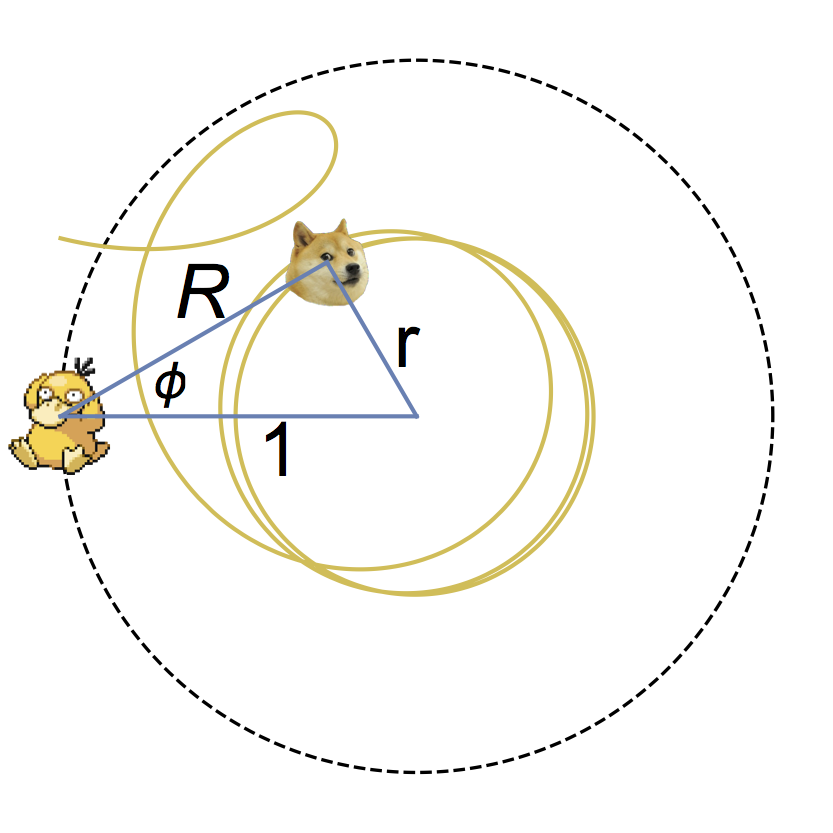

In 2005, Yves Couder showed that bouncing oil drops on vertically
vibrating fluid bath exhibited properties analogous to the
paradoxical properties seen only at the quantum scale. Couder,
John Bush ,
and others, have shown that this system can reproduce
double-slit single-particle interference, orbiting, tunneling,
quantized orbits, spin, and more. Despite the similarities in results, the
physical picture that this system implies is reminiscent of a theory of quantum mechanics
suggested by Louis de Broglie; quite different from the standard view.
Current experiments continue to probe: What undiscovered
similarities does this system have? Where are the differences?
Is it a coincidence that this macro scale system exhibits these
micro scale properties? This experiment cannot tell us that one theory of quantum
mechanics is correct and another is false. Instead, it guides us
to think about old problems in new ways.
For my senior thesis I set up
this experiment and focusing on "tunneling." I got
the idea from a
paper by Eddi, who looked at tunneling probability
while varying barrier width. I measured a similar aspect: the
probability of tunneling as a function of the barrier height. We
found that the higher the barrier, the lower the probability of tunneling.
You can find a copy of my thesis
here .
According to Data from MSL and Phoenix
The first relative humidity data was returned by Phoenix,
and it allowed the first detailed investigation of the diurnal water
cycle on Mars. Phoenix took its measurements in the north polar
region during the martian summer. Much has been discussed with
regards to the water cycle on Mars, including an
evaporation-adsorption cycle where water molecules
alternate between thin layers on the surface of regolith and water
vapor in the air.
The most recent rover to visit Mars, MSL,
also returned detailed relative humidity data in an equatorial region across
a full martian year. A comparison of the two data sets is
warranted since the two rovers are located in the two geographic
extremes of the surface (polar vs. equatorial),
so theoretically these two data sets bracket the
climate on the martian surface.
This abstract
summarizes the work I did over my summer REU
at the
University of Arkansas Space and Planetary Science Center.
Working with Vincent Chevrier and Holly Farris, we were able to
fit Phoenix and MSL data using adsorption theories
built on the foundation of regolith parameters.
(Photo taken by Curiosity Rover.)
And then a few smaller projects, in no particular order:

Some animations (in Mathematica) of Hathaway's
pursuit problem and a modified version of the problem, with the
a poster (for Nonlinear).

An animation (in Mathematica) for the path of a hockey puck in a fixed versus a rotating reference frame.